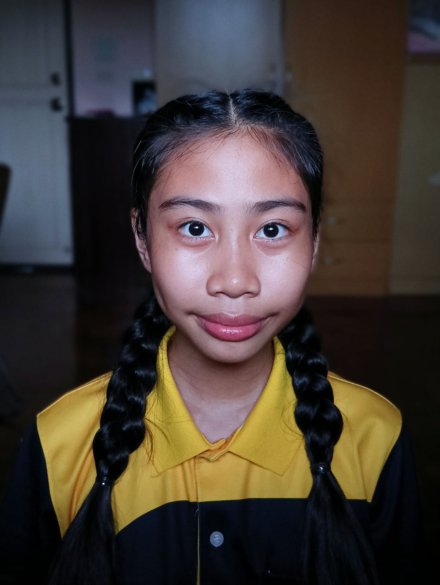

About Me
ทำความรู้จักกับตัวตน และเรื่องราวของฉัน

สวัสดีค่ะ ฉันชื่อเมกาน
ผมเป็นนักเรียนชั้นมัธยมศึกษาปีที่ 3/2 ที่ชอบเรียนรู้สิ่งใหม่ ๆ และสนใจการสร้างผลงานผ่านเทคโนโลยี
เกี่ยวกับ ฉัน
สำหรับฉัน การเรียนไม่ได้หมายถึงการนั่งอยู่ในห้องเรียน เพียงอย่างเดียว แต่ยังหมายถึงการได้ลองทำสิ่งใหม่ และค้นหาว่าเราชอบอะไร
ฉันจึงอยากใช้เว็บไซต์นี้เป็นพื้นที่สำหรับแนะนำตัวเอง และเก็บรวบรวมเรื่องราวเกี่ยวกับการเรียน ความสนใจ งานอดิเรก และสิ่งต่าง ๆ ที่กำลังเรียนรู้
Every new idea is another island waiting to be explored.
เรื่องเล็ก ๆ เกี่ยวกับฉัน
วิชาที่ชอบ
ชอบเรียนรู้สิ่งใหม่
สนใจศิลปะ
ชอบสร้างสรรค์ผลงาน